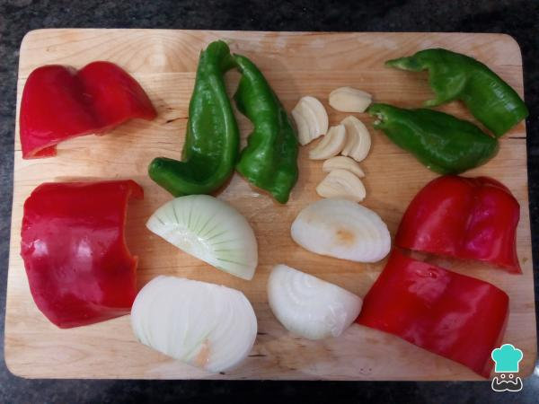
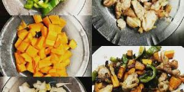

Elaboración (Paso a paso)
-
1.-
Lavamos las verduras, pelamos las que sean necesarias y las troceamos todas en pedazo del mismo tamaño. Las cantidades indicadas son un poco al gusto, de manera que se puede añadir más o menos de cada ingrediente.
 -
2.-
Cubrir la base de la bandeja o el recipiente usado con cebolla cortada, pimiento rojo y verde, zanahoria en rodajas, los dos dientes de ajo machacados, los champiñones y el tomate.
 -
3.-
Salpimentar y echar un chorro de aceite al gusto.
-
4.-
Poner los trozos de pollo encima, salpimentar y pintar con aceite por ambos lados y zumo de limón, lo que sobre exprimir sobre las verduras. Los trozos de limón los ponemos también en la bandeja.
-
5.-
Echar hierbas provenzales sobre el pollo.
-
6.-
Precalentamos el horno a 200 grados.
-
7.-
Ponemos la bandeja a esa temperatura durante 25 minutos por arriba. Damos la vuelta a los trozos de pollo y lo volvemos a poner otros 25 minutos.
-
8.-
Y ¡¡LISTO PARA COMER!!